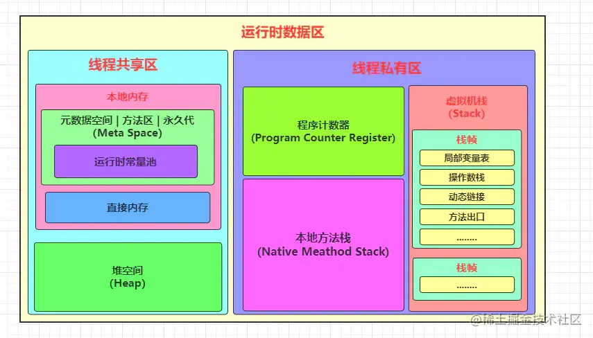
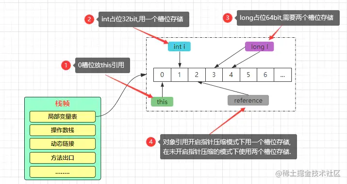

JVM运行时内存
一、JVM运行时内存区
JVM内存区域也被称为JVM运行时数据区，主要包含程序计数器、虚拟机栈、本地方法栈、堆空间、元数据空间（方法区）、运行时常量池、字符串常量池、直接内存（本地内存）等
1.1、线程私有区
1.1.1 、程序计数器（Progran Counter Register）
程序计数器是JVM为每条线程开辟的一块较小的区域，每条线程都有且只有一个程序计数器，线程之间不相互干扰。生命周期与线程一致，随线程启动而生，线程销毁而亡。同时也是JVM所有内存区域中唯一不会发生OOM（OutOfMemoryError/内存溢出）的区域，GC机制不会触及的区域。
==主要是作为当前线程执行时的字节码行号指示器来使用的，当线程执行一个Java方法时，记录线程正在执行的字节码指令地址，当执行引擎处理完某个指令后，程序计数器需要进行对应更新，将指针改向下一条要执行的指令地址，执行引擎会根据PC计数器中记录的地址进行对应的指令执行。当线程在执行一些由C/C++编写的Native方法时，PC计数器中则为空（Undefined）。除此作用之外，也可以保证线程发生CPU时间片切换后能恢复到正确的位置执行==。
1.1.2、虚拟机栈（Stack）
栈的作用是负责程序运行时具体如何执行、如何处理数据等工作。生命周期与线程一致，每个线程创建时都会为之创建一个虚拟机栈。
当线程在执行一个Java方法时，都会为执行的方法生产一个==栈帧（StackFrame）==。一个栈帧中主要包含局部变量表、操作数栈、动态链接、方法出口等信息。
栈不存在GC，但是可能会OOM
1.如何设置栈内存大小?
-Xss size 一般默认为512k~1024k
1.1.2.1、局部变量表
- 定义为一个由==槽（slot）==数字数组，用于存放当前实例对象的引用信息、方法参数以及方法体内定义的基本数据类型变量、对象引用以及返回地址等信息
- 在
Class文件的方法表的Code属性的max_locals指定了该方法所需局部变量表的最大容量。 - 局部变量表所容纳的大小是在编译期确定下来的
- 方法嵌套调用的次数是由栈的大小决定的
- 局部变量表的变量只在当前方法调用中有效。方法调用结束后，随着方法栈桢的销毁，局部变量表也销毁
槽（slot）：槽是局部变量表中的最小单位，规定大小为32bit，对于32bit的数据，比如int类型的变量，指针压缩后的对象信息等，都会使用一个槽来存储。而对于64bit等数据，如long、double类型的变量、未开启指针压缩的对象引用等数据，JVM会为其分配两个连续的槽空间进行存储。
局部变量表中存储的数据只对当前方法有效，虚拟机在执行时，依靠于操作数栈和局部变量表中存储的数据完成操作。方法执行结束后，局部变量表会随着栈桢的出栈\销毁而销毁。
==一般而言，如果当前方法属于构造方法或者实例方法，那么这些方法的局部变量表的下标为0的槽位存储的必然是this引用。==
1.1.2.2、操作数栈（Operand Stack）
操作数栈是一个遵循FILO先进后出模式的栈结构。在class文件的Code属性的max_stacks定义了执行过程中最大的栈深度（在编译期就确定）。
在执行一个方法时，会先创建一个与该方法对应的栈桢，该栈桢中最初的操作数栈是空的，在执行过程中，会根据字节码指令往栈中写入或提取数据。操作数栈的主要目的是用于保存计算过程的中间结果，同时作为计算过程中变量的临时存储。
与局部变量表一样，操作数栈也是由一个32bit的字节数组组成的，操作数栈可以支持的类型：int、long、float、double、reference、returnType等类型，对于byte、short、char类型的数据会在入栈前被转化为int类型。与局部变量表不同的是，操作数栈是通过压栈、出栈方式完成数据访问。
1.1.2.3、动态链接（Dynamic Linking）
虚拟机栈中的每个栈桢都包含一个指向运行时常量池中该栈桢所属方法的引用，持有这个引用是为了支持方法调用过程中的动态链接。
在Java源文件被编译成Class文件时，类中所有的变量、方法调用都会化为符号引用，然后保存在class文件的常量池中，在class文件中描述一个方法调用另一个方法时，就使用常量池中指向方法的符号引用来表示的。动态链接的作用就是为了将这些符号引用转换为调用方法的直接引用。
常量池：位于编译后生成的class字节码文件中
运行时常量池：位于运行期间的元数据空间/方法区中
1.1.2.4、方法出口（Return Address）
一个方法执行时，只有两种情况会导致方法退出，一种是在执行过程中遇到了正常返回的字节码指令，如：ireturn、lreturn、dreturn、areturn、return，释义如下：
ireturn：返回值为int、byte、char、short、boolean类型时使用该指令返回lreturn：返回值为long类型时使用该指令返回dreturn：返回值为double类型时使用该指令返回areturn：返回值为引用类型时使用该指令返回return：无返回void、类或接口初始化方法时使用该指令返回
方法正常执行完成后退出的情况被称为正常完成出口，一般执行返回的字节码指令时，调用者的程序计数器会被作为返回的地址。
除开正常执行完成后退出的情况外，还有一种情况也会导致方法的退出，那就是方法执行过程中出现了异常，并且在方法体中没有处理该异常（没有try/catch），此时也会导致方法退出，这种情况下被称为异常完成出口，返回地址则需要通过异常处理器表来确定。
当一个方法执行结束退出时，会执行如下步骤：
- ①复原上层方法的局部变量表以及操作数栈。
- ②如果当前方法有返回值的情况下，把返回值压入调用者方法栈帧的操作数栈中。
- ③将PC计数器的地址指向改为方法下一条指令的位置，从而使得调用者正常工作。
- PS：异常退出的情况下，是不会给上层调用者返回任何值的。
1.1.2.5、附加信息
1.1.2.6、虚拟机栈的特点和运行原理
采用数组这种快捷有效的存储方式，同时在运行时也被放在内存中，并且也会将操作数栈的栈顶数据放入高速缓存或寄存器中，所以从访问速度上来看， 仅次于PC寄存器。
虚拟机栈这块内存区域不存在垃圾回收，但是存在OOM，在《Java虚拟机规范》中，对这个区域规定了两种异常：
StackOverflowError：当前线程请求的栈深度大于虚拟机栈所允许的深度时抛出该异常。OutOfMemoryError：如果扩展时无法申请到足够的内存空间会抛出OOM异常。
对于每条线程的虚拟机栈大小可以通过
-Xss参数进行调整，默认单位为字节，默认大小为1MB/1024KB/1048576字节。
public void a(){ |
对于这条线程而言，栈中的所有栈帧在同一时刻时，只会存在一个活动栈帧，也就是位于栈顶的栈帧，也就是我们前面所说的当前栈帧。执行引擎执行时，只会执行当前栈帧的字节码指令，如果执行当前方法时，在其中调用了其他方法，那么另外一个方法对应的栈帧会被创建出来，放在顶端，从而成为新的当前帧，接着执行引擎会去执行新帧，当该帧执行结束时，会传回此方法的执行结果给前一个栈帧，也就是上层调用者，比如上述案例中a()就是b()的上层调用者，接着虚拟机会丢弃当前栈帧，使得前一个栈帧重新成为栈顶的当前帧。这个过程会不断重复，直至一条方法调用链结束或因为异常中断，才会停止。
1.1.3、本地方法栈（Native Method Stack）
本地方法栈和虚拟机栈差不多，区别是虚拟机栈是执行java方法的，本地方法栈是执行C编写的Native本地方法。
在HotSpot虚拟机中，二者合二为一了
1.2、线程共享区
线程共享的含义是：在运行时，这些区域对程序中所有线程都是可见的，伴随着JVM的生命周期同生共死。
运行时数据区主要包含：堆空间、元数据空间（方法区）、直接内存三块
1.2.1、Java堆空间（heap）
大部分的JVM调优手段都是基于堆空间而进行展开的。堆主要解决的问题是数据存储问题，重点是数据怎么存，放哪里，怎么放等。
堆空间会在JVM启动时创建，对于JVM来说，堆空间是唯一的，每个JVM都只会存在一个堆空间。==我们可以通过参数**-Xms和-Xmx**指定堆的起始内存大小和最大内存大小，当超过-Xmx指定的大小时则会抛出OOM==
默认情况下，如果不指定堆内存大小，起始大小默认为当前物理机内存的1/64，最大默认为当前物理机内存的1/4。
在Java程序运行时，系统运行过程中产生的大部分实例对象及数组对象都会放到堆中存储。
堆空间在物理上可以是不连续的，只需要逻辑上视为连续即可。所以一个JVM的堆空间在实际的机器内存上，可能是由机器内存中多个不同位置的空间组成的。
在不同Java版本中，堆空间也发生了不同的改变。
- JDK7及之前：堆空间包含新生代、年老代、永久代
- JDK8：堆空间包含新生代、年老代，永久代被改为元数据空间，位于堆之外
- JDK9：堆空间从逻辑上保留了分代的概念，但物理上本身不分代
- JDK11：堆空间从此以后逻辑上和物理上都不分代
1.2.1.1、分代堆空间
堆空间会被分为不同的区域用于存储不同的生命周期的对象实例。JDK8之前，也就是一个Eden区、两个Survivor区（From/To区）以及一个old区，从物理上来说都是连续的内存，每个区域存储不同周期的对象的实例。
1.2.1.2、不分代堆空间
到了JDK1.9时，G1成为了JVM内嵌的默认GC器，Java堆空间从此出现了不分代的概念，但不分代也分为两种情况，一种是逻辑分代，物理不分代，另一种则是逻辑+物理都不分代。
逻辑分代，物理不分代（G1）：对象分配的逻辑上还是存在分代的思想，但是物理内存上不会再分为几块完整的分代空间。
逻辑+物理都不分代（ZGC、ShenandoahGC）：无论从对象分配的逻辑上还是物理内存上，都不存在分代的概念。
1.2.1.3、JDK7及之前的堆空间内存划分
一般堆空间会被划分为三个区域：新生代、年老代、永久代
新生代：一个Eden区，两个Survivor区（From/To区）以及一个old区，比例时8:1:1
年老代：一个old区
永久代：方法区
新生代主要用于存储未达到年老代分配条件的对象，其中Eden区是专门用来存储刚创建出来的对象实例，两个Survivor区主要用于垃圾回收时给存活对象“避难”。
年老代主要用于存储达到符合分配条件的对象实例，比如达到“年龄”的对象以及过大“体积”的大对象等。
方法区/永久代主要用于存储类的元数据信息，如类描述信息、字段信息、方法信息、静态变量信息、异常表、方法表等。
1.2.1.4、JDK8堆空间内存划分
最大区别在于移除了方法区，在本地内存中加入了元数据空间来存储之前方法区中的大部分数据（原方法区中的数据并不是所有都被迁移到了元空间存储，有些数据被分散到了JVM各个区域）。除此之外，常量池在1.8的时候也被移到了堆外。
1.2.1.5、JDK9堆空间内存划分
在此之前，堆空间的内存布局都是分代存储的方式。到了JDK9，内存区域被划分为一个个的Region区。
在JDK1.9时，G1将Java堆划分为多个大小相等的独立的Region区域，不过在HotSpot的源码TARGET_REGION_NUMBER定义了Region区的数量限制为2048个（实际上允许超过这个值，但是超过这个数量后，堆空间会变的难以管理）。
一般
Region区的大小等于堆空间的总大小除以2048，比如目前的堆空间总大小为8GB，就是8192MB/2048=4MB，那么最终每个Region区的大小为4MB，当然也可以用参数-XX:G1HeapRegionSize强制指定每个Region区的大小，但是不推荐，毕竟默认的计算方式计算出的大小是最适合管理堆空间的。
G1保留了年轻代和老年代的概念，但不再是物理隔阂了，它们都是可以不连续物理内存来组成的Region的集合。在G1中，判定一个对象是否为大对象的方式为：对象大小是否超过单个普通
Region区的50%，如果超过则代表当前对象为大对象，那么该对象会被直接放入Humongous区
1.2.1.6、JDK11堆空间内存划分
JDK11推出了一款新的垃圾回收器ZGC。
ZGC也会把堆空间划分为一个个的Regin区，不同的是，ZGC中不存在分代，只是简单的把Region区分为大、中、小三个等级：
- 小型Region区（small）：固定大小为2MB，用于分配小于256kb大对象
- 中型Region区（Medium）：固定大小为32MB，用于分配大于256kb，小于4MB大对象
- 大型Region区（Large）：没有固定大小，但是大小必须为2MB的整数倍，用于存放大于4MB的对象，每个Large区只能存放一个大对象
1.2.2、本地内存
运行时数据区中的本地内存主要分为两块，一部分是元数据空间（原方法区），另一部分则为直接内存。
1.2.2.1 元数据空间（MetaSpace）
方法区也就是所谓的永久代、持久代，方法区主要存储了可以通过反射机制拿到的所有数据，如Class类信息、Method方法信息、Field字段信息
方法区主要存储的数据：类的元数据、VM的内部类、类的层级信息/方法信息/字段信息、方法的编译信息和字节码数据、静态变量、常量池以及方法引用。
而之前方法区运行时常量池中的字符串常量池则被放置在了堆中，因为在程序运行过程中会随着运行时间的增加，字符串常量池中的字符串会越来越多，所占空间会越来越大，所以将其放在堆中的好处在于：使得字符串常量池在GC机制的范围之内，字符串也会存在回收操作。
同时除开字符串常量池被挪动到了堆内之外，类的静态变量的存储也被放在了堆中。对比如下
1.2.2.2、直接内存
直接内存这块区域不是虚拟机的内存区域，在创建时会直接向操作系统申请内存空间，属于直接使用物理内存的一块区域，也被称为“堆外空间”。
对比堆空间而言，访问直接内存的速度会超出堆内存，也就是读写性能优于Java堆，来源于Java的NIO库，Java的NIO可以允许Java程序直接使用本地的直接内存存储数据缓冲，因为如果把一些文件数据转为对象存储在堆中时，很容易导致堆空间负载过重而OOM。所以出于性能和稳定性两方面的考虑，一般对于一些读写频繁的场景或读取/写出大文件时的场景都可以使用直接内存进行操作
如果程序中需要用到直接内存时可以通过
java.nio.ByteBuffer来创建，调用allocateDirect方法申请即可，同时可以通过存在堆中的DirectByteBuffer操作直接内存。
直接内存的最大空间值可以通过-XX:MaxDirectMemorySize设置，如果不指定则默认与-Xmx参数设置的空间大小一致
一般在使用直接内存的时候，不能将希望寄托给GC机制的全局GC来管理内存，因此我们可以和C语言一样，尝试自己写一个回收直接内存的方法，然后使用完成后自己手动回收申请的内存
import java.nio.ByteBuffer; |
当使用完成申请的内存空间后，可以手动调用clean()方法进行内存的回收释放。
 wechat
wechat alipay
alipay